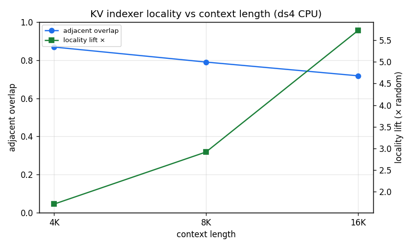
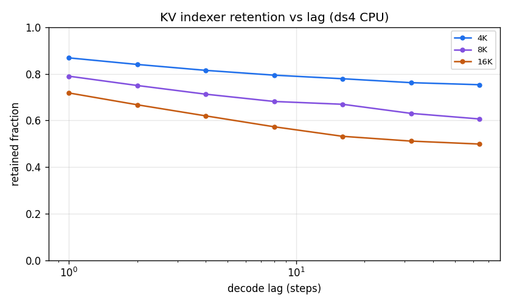
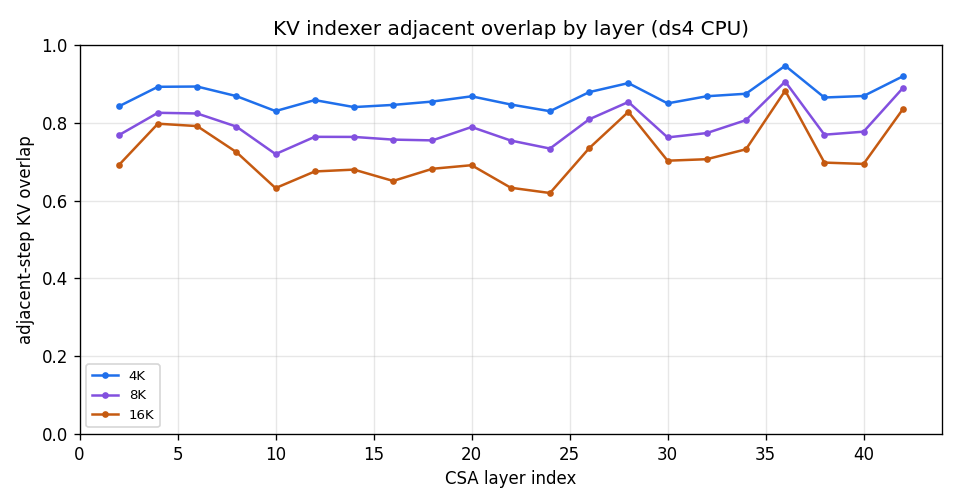

DeepSeek-V4 Sparse Attention — Part III
An independent CPU reference measurement of the lightning-indexer KV-selection locality, using the single-file ds4 engine. Same mechanism as Part I, a different runtime — and the numbers agree.
§Overview in one minute
Part I measured how predictable DeepSeek-V4's per-token KV selection is on a GPU (vLLM/B200). Here we reproduce the core result on a completely different stack — a CPU-only C reference engine (ds4) running the IQ2-quantized model — as a cross-check, and to instrument the exact same decode path that also emits the MoE routing trace in Part IV. The temporal-locality picture holds.
§1Why re-measure on CPU?
Two reasons: independent confirmation, and a shared instrumentation point.
- Different stack, same answer. Part I used vLLM on a B200 GPU. If the temporal-locality result also appears in an unrelated CPU reference implementation (different kernels, different quantization: IQ2 vs FP4/FP8), it is a property of the model's selection behavior, not of one runtime.
- One decode path, two traces. The
ds4decode loop is where we hook both the CSA lightning-indexer top-k (this report) and the MoE routed-expert selection (Part IV). Collecting them from the same forward pass keeps them perfectly aligned by (layer, decode step).
l selects (top-512) when generating token t. Every metric below describes how Sl,t moves over time.§2Setup & instrumentation
- Engine.
ds4— a single-file C CPU inference engine for DeepSeek-V4 — running DeepSeek-V4-Flash at IQ2 quantization (≈81 GB), 64 threads, greedy decode (temp 0). - Task. RULER
niah_single_2(single needle-in-a-haystack retrieval) at 4K, 8K, 16K tokens; one sample per length. The model retrieves the buried fact correctly at all three lengths. - Trace. Every time a CSA layer's indexer selects its top-512, the selected compressed indices (and scores) are written to a JSONL trace — decode phase only — one record per (layer, token). 21 CSA layers of the 43 total.
- Analysis. The trace is ingested to Parquet and reduced to the locality metrics below with the same code used for the GPU study, so the two are directly comparable.
| Context | prompt tokens | decode steps | candidate entries (mean) | kept fraction | wall-clock |
|---|---|---|---|---|---|
| 4K | 3,969 | 153 | 1,011 | 50.6% | ~1h17m |
| 8K | 7,485 | 163 | 1,891 | 27.1% | ~1h53m |
| 16K | 16,264 | 117 | 4,080 | 12.5% | ~4h22m |
"Kept fraction" = 512 / candidate entries. As context grows the same 512-budget is drawn from a larger pool, so sparsity rises from ~2× (4K) to ~8× (16K).
§3The metrics, in plain words
Adjacent-step overlap
Of the 512 entries selected now, what fraction were also selected one step ago. Higher = more predictable from the immediate past. (Called "previous-set recall" in Part I.)
Locality lift
Adjacent overlap divided by what two independent random 512-subsets of the candidate pool would share (= 512 / candidates). Lift = 1 means "no better than chance"; lift = 5.7 means the selection is 5.7× more self-similar than random.
Retention at lag k
Overlap of the current selection with the one k steps earlier — how long the set stays correlated.
Working-set ratio
Unique entries touched over a window of w steps, divided by w×512. Small = the same entries keep recurring (a compact hot set); near 1 = every step touches fresh entries.
Recency-baseline overlap
Overlap of the selection with the most-recent 512 compressed entries — what a naive "just keep the latest" policy would capture. Comparing this to the actual adjacent overlap separates recency from semantic reuse.
§4Results — locality strengthens with context
Adjacent overlap falls as context grows (harder: 512 drawn from more candidates), but the locality lift rises — the selection becomes far more non-random exactly where a memory system needs it most:
| Context | candidates | sparsity | adjacent overlap | jaccard | churn | locality lift |
|---|---|---|---|---|---|---|
| 4K | 1,011 | 2.0× | 0.868 | 0.771 | 0.132 | 1.72× |
| 8K | 1,891 | 3.7× | 0.790 | 0.662 | 0.210 | 2.92× |
| 16K | 4,080 | 8.0× | 0.718 | 0.573 | 0.282 | 5.72× |

§5Retention & working set
Selections stay correlated many steps back — decaying gently rather than falling off a cliff, so a multi-step lookahead is informative for prefetch:
| retention at lag k → | 1 | 2 | 4 | 8 | 16 | 32 | 64 |
|---|---|---|---|---|---|---|---|
| 4K | 0.868 | 0.840 | 0.815 | 0.794 | 0.779 | 0.762 | 0.753 |
| 8K | 0.790 | 0.750 | 0.712 | 0.681 | 0.669 | 0.630 | 0.606 |
| 16K | 0.718 | 0.667 | 0.619 | 0.573 | 0.532 | 0.511 | 0.498 |

The working-set ratio shrinks fast with the window — the same entries keep recurring, so a compact hot set covers many steps. Over a 64-step window a CSA layer's union of selections is only 2.6% (4K) to 5.6% (16K) of 64×512:
| working-set ratio, window w → | 1 | 2 | 4 | 8 | 16 | 32 | 64 |
|---|---|---|---|---|---|---|---|
| 4K | 1.000 | 0.565 | 0.317 | 0.176 | 0.096 | 0.051 | 0.026 |
| 16K | 1.000 | 0.640 | 0.409 | 0.259 | 0.163 | 0.099 | 0.056 |
§6Semantic reuse, not just recency
Is the model just re-picking the most-recent entries, or genuinely returning to old, relevant ones?
Compare the actual adjacent overlap to a recency baseline — the overlap with the most-recent 512 entries. If selection were pure recency, the two would match. Instead the gap widens with context: at 16K the model's selection is 4.6× more self-similar than a recency policy would explain.
| Context | adjacent overlap | recency baseline | ratio |
|---|---|---|---|
| 4K | 0.868 | 0.429 | 2.0× |
| 8K | 0.790 | 0.308 | 2.6× |
| 16K | 0.718 | 0.157 | 4.6× |
§7Per-layer stability
Adjacent overlap varies by layer. Grouping the 21 CSA layers into shallow / middle / deep thirds, the deep layers are the most stable at every context length — an argument for per-layer memory budgets rather than one-size-fits-all.
| Context | shallow | middle | deep |
|---|---|---|---|
| 4K | 0.860 | 0.861 | 0.884 |
| 8K | 0.779 | 0.778 | 0.812 |
| 16K | 0.713 | 0.691 | 0.750 |

§8Takeaways
- An independent CPU reference engine (ds4, IQ2) reproduces the GPU/vLLM temporal-locality result: adjacent overlap 0.87→0.72 over 4K→16K, locality lift 1.7×→5.7×.
- Locality lift rises with context — the selection gets more non-random exactly as the KV cache gets expensive.
- Reuse is semantic, not merely recent — up to 4.6× beyond a recency baseline at 16K.
- A compact hot set works: a 64-step working set is ≤5.6% of
64×512. - Deep layers are the most stable → per-layer budgets make sense.
- This CPU decode path is the same one that emits the MoE routing trace in Part IV.
§9Honest limitations
- n = 1 per length. One RULER sample each at 4K/8K/16K — no cross-sample confidence intervals (Part I's 60+ prompts supply that; the point here is cross-stack agreement).
- IQ2 quantization + CPU reference path. Selections come from a heavily quantized model on a reference (non-GPU) kernel path; quantization may shift selections slightly versus full precision.
- Logical compressed-KV indices. Overlaps are over logical entry ids, not a physical cache — an upper bound that ignores prefetch timing and bandwidth.
- Greedy decode, RULER needle task. A single retrieval workload; broader tasks would strengthen external validity.